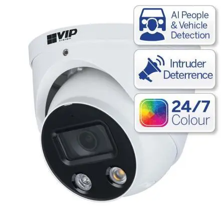

Security Cameras
With the ever present crime in Werribee and Melbourne and vast improvements with security camera technology it makes good sense to have a security system installed.
Whether you are on a budget and after a single security camera for the front of your home, a full system or a commercial CCTV system, we have you covered.
Security camera systems are more than just a security device; you can keep an eye on your home, expected deliveries and even your beloved pets. We offer a full range of Hikvision, Dahua, Samsung, and Bosch security cameras ideal for any home or business CCTV security system.